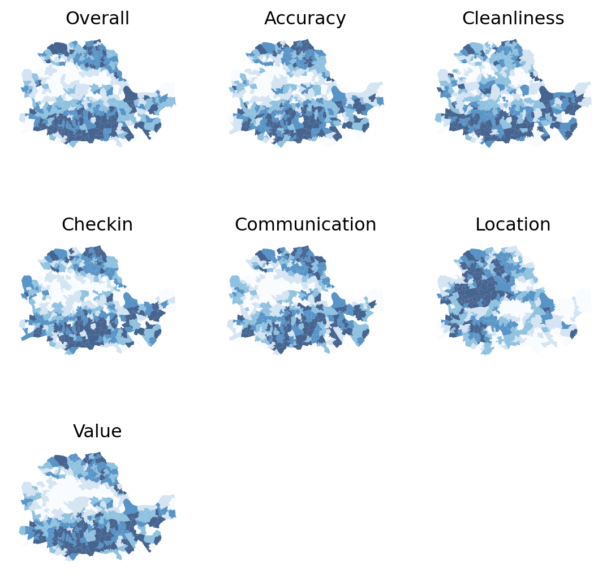
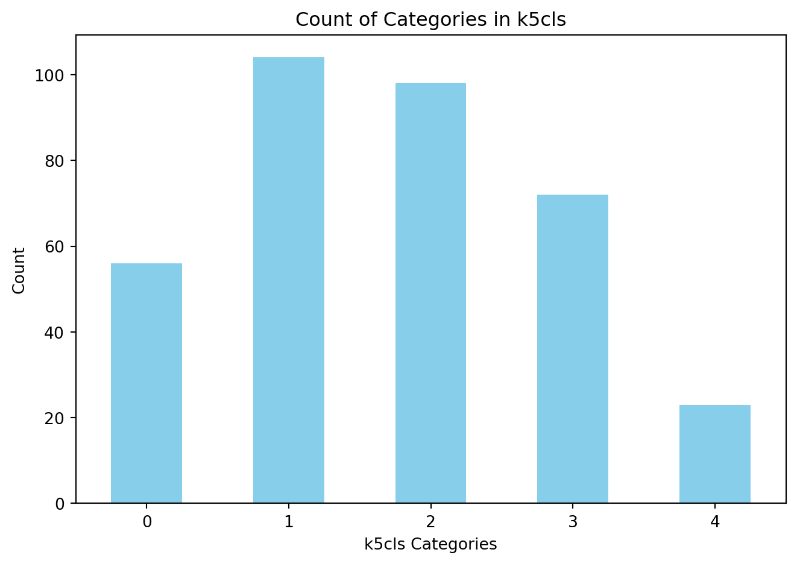

import seaborn as sns
import pandas as pd
from pysal.lib import weights
import geopandas as gpd
import contextily as cx
import numpy as np
import matplotlib.pyplot as plt
from sklearn import clusterLab in Python
We will start by loading the necessary libraries:
Data
The dataset we will use in this occasion is an extract from the online website AirBnb. AirBnb is a company that provides a meeting point for people looking for an alternative to a hotel when they visit a city, and locals who want to rent (part of) their house to make some extra money. The website has a continuously updated list of all the available properties in a given city that customers can check and book through. In addition, the website also provides a feedback mechanism by which both ends, hosts and guests, can rate their experience. Aggregating ratings from guests about the properties where they have stayed, AirBnb provides additional information for every property, such as an overall cleanliness score or an index of how good the host is at communicating with the guests.
The original data are provided at the property level and for the whole of London. However, since the total number of properties is very large for the purposes of this notebook, they have been aggregated at the Middle Super Output Area (MSOA), a geographical unit created by the Office of National Statistics. Although the original source contains information for the Greater London, the vast majority of properties are located in Inner London, so the data we will use is restricted to that extent. Even in this case, not every polygon has at least one property. To avoid cases of missing values, the final dataset only contains those MSOAs with at least one property, so there can be average ratings associated with them.
Our goal in this notebook is to create a classification of areas (MSOAs) in Inner London based on the ratings of the AirBnb locations. This will allow us to create a typology for the geography of AirBnb in London and, to the extent the AirBnb locations can say something about the areas where they are located, the classification will help us understand the geography of residential London a bit better. This dataset is a good example of the kind of analyses that the data revolution is making possible as, only a few years ago, it would have been very hard to obtain a similarly large survey of properties with ratings like this one. On the other hand, it is important to keep in mind the biases that these data are subject to and thus the limitations in terms of generalising findings to the general population. In any case, this dataset is a great example to learn about statistical clustering of spatial observations, both in a geodemographic analysis as well as in a regionalisation.
Let’s start by loading the main table of MSOAs:
# Read the file in
abb = gpd.read_file(
"./data/London/Polygons/london_abb.gpkg"
)# Inspect the structure of the table
abb.info()<class 'geopandas.geodataframe.GeoDataFrame'>
RangeIndex: 353 entries, 0 to 352
Data columns (total 18 columns):
# Column Non-Null Count Dtype
--- ------ -------------- -----
0 MSOA_CODE 353 non-null object
1 accommodates 353 non-null float64
2 bathrooms 353 non-null float64
3 bedrooms 353 non-null float64
4 beds 353 non-null float64
5 number_of_reviews 353 non-null float64
6 reviews_per_month 353 non-null float64
7 review_scores_rating 353 non-null float64
8 review_scores_accuracy 353 non-null float64
9 review_scores_cleanliness 353 non-null float64
10 review_scores_checkin 353 non-null float64
11 review_scores_communication 353 non-null float64
12 review_scores_location 353 non-null float64
13 review_scores_value 353 non-null float64
14 property_count 353 non-null int64
15 BOROUGH 353 non-null object
16 GSS_CODE 353 non-null object
17 geometry 353 non-null geometry
dtypes: float64(13), geometry(1), int64(1), object(3)
memory usage: 49.8+ KBBefore we jump into exploring the data, one additional step that will come in handy down the line. Not every variable in the table is an attribute that we will want for the clustering. In particular, we are interested in review ratings, so we will only consider those. Hence, let us first manually write them in a vector called ratings so they are easier to subset. We also save names for each of the variables in ratings so we can print them out nicely later on:
ratings = [
'review_scores_rating',
'review_scores_accuracy',
'review_scores_cleanliness',
'review_scores_checkin',
'review_scores_communication',
'review_scores_location',
'review_scores_value'
]
ratings_names = [
'Overall', # Assigns more descriptive names to the corresponding review score types.
'Accuracy',
'Cleanliness',
'Checkin',
'Communication',
'Location',
'Value'
]At the end of this computational notebook, we will also use the administrative boroughs. Let’s load them in so they are ready when we need them.
boroughs = gpd.read_file("./data/London/Polygons/london_inner_boroughs.geojson")Note that, in comparison to previous datasets, this one is provided in a new format, .geojson. GeoJSON files are a plain text file (you can open it on any text editor and see its contents) that follows the structure of the JSON format, widely used to exchange information over the web, adapted for geographic data, hence the geo at the front. GeoJSON files have gained much popularity with the rise of web mapping and are quickly becoming a de-facto standard for small datasets because they are readable by humans and by many different platforms. As you can see above, reading them in Python is exactly the same as reading a shapefile, for example.
Getting to know the data
The best way to start exploring the geography of AirBnb ratings is by plotting each of them into a different map. This will give us a univariate perspective on each of the variables we are interested in.
Since we have many variables to plot, we will create a loop that generates each map for us and places it on a “subplot” of the main figure. Given that before we saved the names of the variables of interest as a vector called ratings, we can now make use of this to write a simpler for-loop:
# Create figure and axes (this time it's 9, arranged 3 by 3)
f, axs = plt.subplots(nrows=3, ncols=3, figsize=(7, 7))
# Make the axes accessible with single indexing
axs = axs.flatten()
# Start the loop over all the variables of interest
for i, col in enumerate(ratings):
# select the axis where the map will go
ax = axs[i]
# Plot the map
abb.plot(
column=col,
ax=ax,
scheme='Quantiles',
linewidth=0,
cmap='Blues',
alpha=0.75
)
# Remove axis clutter
ax.set_axis_off()
# Set the axis title to the name of variable being plotted
ax.set_title(ratings_names[i])
# Turn off axes for any remaining empty subplots (in this case, the last two)
for j in range(i+1, len(axs)):
axs[j].set_visible(False)
# Display the figure
plt.show()
Before we delve into the substantive interpretation of the map, let us walk through the process of creating the figure above, which involves several subplots inside the same figure:
- First we set the number of rows and columns we want for the grid of subplots.
- The resulting object, axs, is not a single one but a grid (or array) of axis. Because of this, we can’t plot directly on axs, but instead we need access each individual axis.
- To make that step easier, we unpack the grid into a flat list (array) for the axes of each subplot with flatten.
- At this point, we set up a for loop to plot a map in each of the subplots.
- Within the loop, we extract the axis, plot the choropleth on it and style the map.
- Set the last two sets of axis invisible.
- Display the figure.
As we can see, there is substantial variation in how the ratings for different aspects are distributed over space. While variables like the overall rating or the communication with the host tend to higher in peripheral areas, others like the location score are more concentrated in the city centre.
Even though we only have seven variables, it is very hard to “mentally overlay” all of them to come up with an overall assessment of the nature of each part of London. For bivariate correlations, a useful tool is the correlation matrix plot, available in seaborn:
pairplot = sns.pairplot(abb[ratings], kind='reg', diag_kind='hist', height=1)
# Iterate over each subplot in the pairplot to customize axis labels and ticks
for i in range(len(ratings_names)): # Loop over each row of subplots
for j in range(len(ratings_names)): # Loop over each column of subplots
# Set the axes label to the corresponding name from ratings_names, with font size 6
pairplot.axes[i][j].set_xlabel(ratings_names[j], fontsize=6)
pairplot.axes[i][j].set_ylabel(ratings_names[i], fontsize=6)
# Adjust the tick parameters to set the label size to 6 for both axes
pairplot.axes[i][j].tick_params(axis='both', which='major', labelsize=6)
# Fine-tune the layout of the subplots using subplots_adjust
plt.subplots_adjust(top=0.95, bottom=0.1, left=0.1, right=0.95)
plt.show()The above plot is helpful to consider uni and bivariate questions such as: what is the relationship between the overall rating and location scores? (Positive) Are the overall ratings more correlated with location or with cleanliness? (Cleanliness). However, sometimes, this is not enough and we are interested in more sophisticated questions that are truly multivariate and, in these cases, the figure above cannot help us. For example, it is not straightforward to answer questions like: what are the main characteristics of the South of London? What areas are similar to the core of the city? Are the East and West of London similar in terms of the kind of AirBnb properties you can find in them? For these kinds of multi-dimensional questions -involving multiple variables at the same time- we require a truly multidimensional method like statistical clustering.
An AirBnb geodemographic classification of Inner London using K-means
A geodemographic analysis involves the classification of the areas that make up a greographical map into groups or categories of observations that are similar within each other but different between them. The classification is carried out using a statistical clustering algorithm that takes as input a set of attributes and returns the group (“labels” in the terminology) each observation belongs to. Depending on the particular algorithm employed, additional parameters, such as the desired number of clusters employed or more advanced tuning parameters (e.g. bandwith, radius, etc.), also need to be entered as inputs. For our geodemographic classification of AirBnb ratings in Inner London, we will use one of the most popular clustering algorithms: K-means. This technique only requires as input the observation attributes and the final number of groups that we want it to cluster the observations into. In our case, we will use five to begin with as this will allow us to have a closer look into each of them.
Although the underlying algorithm is not trivial, running K-means in Python is streamlined thanks to scikit-learn. Similar to the extensive set of available algorithms in the library, its computation is a matter of two lines of code. First, we need to specify the parameters in the KMeans method (which is part of scikit-learn’s cluster submodule). Note that, at this point, we do not even need to pass the data:
kmeans5 = cluster.KMeans(n_clusters=5, random_state=12345, n_init='auto')This sets up an object that holds all the parameters required to run the algorithm. In our case, we only passed the number of clusters (n_clusters) and the random state, a number that ensures every run of K-Means, which remember relies on random initialisations, is the same and thus reproducible. The n-init is an argument that controls for the number of times the k-means algorithm is run with different centroid seeds.
To actually run the algorithm on the attributes, we need to call the fit method inkmeans5`:
# Run the clustering algorithm
k5cls = kmeans5.fit(abb[ratings])The k5cls object we have just created contains several components that can be useful for an analysis. For now, we will use the clusters, which represent the different categories in which we have grouped the data. Labels for the clusters can be extracted as follows:
k5cls.labels_array([0, 2, 2, 2, 1, 1, 2, 3, 0, 3, 1, 3, 0, 3, 3, 3, 2, 1, 1, 0, 0, 0,
4, 4, 4, 4, 4, 0, 0, 4, 0, 0, 3, 2, 1, 1, 1, 1, 2, 1, 3, 1, 1, 1,
2, 1, 1, 1, 2, 2, 3, 4, 0, 1, 1, 1, 1, 2, 2, 2, 0, 2, 2, 1, 3, 2,
2, 2, 2, 2, 2, 2, 2, 1, 2, 1, 2, 2, 1, 1, 1, 1, 2, 2, 1, 2, 3, 3,
3, 1, 1, 3, 1, 1, 3, 1, 1, 0, 1, 0, 3, 4, 0, 0, 3, 1, 1, 3, 0, 2,
1, 1, 1, 1, 1, 1, 3, 1, 1, 1, 2, 1, 3, 1, 1, 1, 1, 1, 1, 2, 2, 0,
3, 0, 3, 3, 0, 1, 1, 3, 1, 3, 2, 1, 4, 3, 3, 0, 0, 4, 0, 0, 3, 3,
3, 3, 0, 3, 3, 3, 3, 2, 1, 1, 3, 2, 2, 2, 2, 2, 2, 2, 1, 3, 2, 2,
2, 2, 2, 1, 2, 1, 2, 2, 2, 2, 2, 2, 2, 2, 1, 4, 3, 1, 3, 1, 2, 1,
2, 1, 1, 1, 2, 1, 1, 2, 2, 3, 2, 0, 2, 2, 2, 2, 4, 1, 3, 2, 1, 2,
2, 1, 4, 2, 2, 3, 1, 0, 1, 3, 1, 1, 3, 0, 3, 2, 0, 0, 3, 0, 0, 1,
0, 3, 3, 1, 1, 1, 3, 1, 1, 3, 2, 1, 2, 2, 2, 3, 2, 2, 2, 1, 1, 1,
1, 3, 3, 0, 1, 3, 0, 4, 2, 0, 3, 4, 0, 4, 2, 0, 3, 0, 4, 0, 3, 0,
0, 1, 3, 0, 4, 3, 1, 1, 1, 1, 1, 2, 1, 1, 2, 1, 2, 2, 3, 1, 2, 0,
2, 1, 1, 2, 1, 2, 0, 2, 2, 2, 2, 2, 2, 2, 2, 3, 3, 3, 0, 3, 2, 4,
3, 3, 0, 0, 0, 3, 0, 4, 0, 3, 4, 0, 3, 4, 4, 0, 3, 0, 1, 3, 0, 3,
0], dtype=int32)Each number represents a different category, so two observations with the same number belong to same group. The labels are returned in the same order as the input attributes were passed in, which means we can append them to the original table of data as an additional column:
abb['k5cls'] = k5cls.labels_Mapping the categories
To get a better understanding of the classification we have just performed, it is useful to display the categories created on a map. For this, we will use a unique values choropleth, which will automatically assign a different color to each category:
# Setup figure and ax
fig, ax = plt.subplots(1, figsize=(9, 9))
# Plot unique values choropleth including a legend and with no boundary lines
abb.plot(
column='k5cls', categorical=True, legend=True, linewidth=0, ax=ax, cmap='viridis'
)
# Remove axis
ax.set_axis_off()
# Add title
plt.title('AirBnb Geodemographic classification for Inner London')
# Display the map
plt.show()The map above represents the geographical distribution of the five categories created by the K-means algorithm. A quick glance shows a strong spatial structure in the distribution of the colors.
Exploring the nature of the categories
Once we have a sense of where and how the categories are distributed over space, it is also useful to explore them statistically. This will allow us to characterize them, giving us an idea of the kind of observations subsumed into each of them. As a first step, let us find how many observations are in each category. To do that, we will make use of the groupby operator introduced before, combined with the function size, which returns the number of elements in a subgroup:
k5sizes = abb.groupby('k5cls').size()
k5sizesk5cls
0 56
1 104
2 98
3 72
4 23
dtype: int64The groupby operator groups a dataframe using the values in the column provided (k5cls) and passes them onto the function provided aftwerards, which in this case is size. Effectively, what this does is to groupby the observations by the categories created and count how many of them each contains. For a more visual representation of the output, a bar plot is a good alternative:
fig, ax = plt.subplots(figsize=(7, 5))
k5sizes.plot(kind='bar', color='skyblue')
plt.title('Count of Categories in k5cls')
plt.xlabel('k5cls Categories')
plt.xticks(rotation=0)
plt.ylabel('Count')
plt.tight_layout() # Adjust layout to make room for labels
plt.show()
As we suspected from the map, groups varying sizes, with groups one, two and three being over 70 observations each, and four being under 25.
In order to describe the nature of each category, we can look at the values of each of the attributes we have used to create them in the first place. Remember we used the average ratings on many aspects (cleanliness, communication of the host, etc.) to create the classification, so we can begin by checking the average value of each. To do that in Python, we will rely on the groupby operator which we will combine it with the function mean:
# Calculate the mean by group
k5means = abb.groupby('k5cls')[ratings].mean()
# Show the table transposed (so it's not too wide)
k5means.T| k5cls | 0 | 1 | 2 | 3 | 4 |
|---|---|---|---|---|---|
| review_scores_rating | 90.725593 | 93.727497 | 95.330624 | 92.134328 | 88.322160 |
| review_scores_accuracy | 9.355684 | 9.605591 | 9.717272 | 9.472732 | 9.149055 |
| review_scores_cleanliness | 9.132700 | 9.328059 | 9.478406 | 9.214409 | 8.907681 |
| review_scores_checkin | 9.510472 | 9.679087 | 9.785712 | 9.588242 | 9.413322 |
| review_scores_communication | 9.543217 | 9.722030 | 9.804255 | 9.627248 | 9.444095 |
| review_scores_location | 9.448517 | 9.443591 | 9.539375 | 9.546235 | 9.454598 |
| review_scores_value | 9.090933 | 9.384535 | 9.531206 | 9.220018 | 8.901364 |
This concludes the section on geodemographics. As we have seen, the essence of this approach is to group areas based on a purely statistical basis: where each area is located is irrelevant for the label it receives from the clustering algorithm. In many contexts, this is not only permissible but even desirable, as the interest is to see if particular combinations of values are distributed over space in any discernible way. However, in other context, we may be interested in created groups of observations that follow certain spatial constraints. For that, we now turn into regionalization techniques.
Regionalisation algorithms
Regionalisation is the subset of clustering techniques that impose a spatial constraint on the classification. In other words, the result of a regionalisation algorithm contains areas that are spatially contiguous. Effectively, what this means is that these techniques aggregate areas into a smaller set of larger ones, called regions. In this context then, areas are nested within regions. Real world examples of this phenomenon includes counties within states or, in the UK, local super output areas (LSOAs) into middle super output areas (MSOAs). The difference between those examples and the output of a regionalisation algorithm is that while the former are aggregated based on administrative principles, the latter follows a statistical technique that, very much the same as in the standard statistical clustering, groups together areas that are similar on the basis of a set of attributes. Only that now, such statistical clustering is spatially constrained.
As in the non-spatial case, there are many different algorithms to perform regionalisation, and they all differ on details relating to the way they measure (dis)similarity, the process to regionalise, etc. However, same as above too, they all share a few common aspects. In particular, they all take a set of input variables or attributes and a representation of space in the form of a binary spatial weights matrix. Depending on the algorithm, they also require the desired number of output regions into which the areas are aggregated.
To illustrate these concepts, we will run a regionalisation algorithm on the AirBnb data we have been using. In this case, the goal will be to re-delineate the boundary lines of the Inner London boroughs following a rationale based on the different average ratings on AirBnb properties, instead of the administrative reasons behind the existing boundary lines. In this way, the resulting regions will represent a consistent set of areas that are similar with each other in terms of the ratings received.
Defining space formally
Very much in the same way as with ESDA techniques, regionalization methods require a formal representation of space that is statistics-friendly. In practice, this means that we will need to create a spatial weights matrix for the areas to be aggregated.
Technically speaking, this is the same process as we have seen before, thanks to PySAL. The difference in this case is that we did not begin with a shapefile, but with a GeoJSON. Fortunately, PySAL supports the construction of spatial weights matrices “on-the-fly”, that is from a table. This is a one-liner:
w = weights.Queen.from_dataframe(abb)/var/folders/79/65l52xsj7vq_4_t_l6k5bl2c0000gn/T/ipykernel_30979/2521922249.py:1: FutureWarning:
`use_index` defaults to False but will default to True in future. Set True/False directly to control this behavior and silence this warning
Creating regions from areas
At this point, we have all the pieces needed to run a regionalization algorithm. For this example, we will use a spatially-constrained version of the agglomerative algorithm. This is a similar approach to that used above (the inner-workings of the algorithm are different however) with the difference that, in this case, observations can only be labelled in the same group if they are spatial neighbors, as defined by our spatial weights matrix w. The way to interact with the algorithm is very similar to that above. We first set the parameters:
sagg = cluster.AgglomerativeClustering(n_clusters=12, connectivity=w.sparse)
saggAgglomerativeClustering(connectivity=<353x353 sparse matrix of type '<class 'numpy.float64'>'
with 1978 stored elements in Compressed Sparse Row format>,
n_clusters=12)In a Jupyter environment, please rerun this cell to show the HTML representation or trust the notebook. On GitHub, the HTML representation is unable to render, please try loading this page with nbviewer.org.
AgglomerativeClustering(connectivity=<353x353 sparse matrix of type '<class 'numpy.float64'>'
with 1978 stored elements in Compressed Sparse Row format>,
n_clusters=12)And we can run the algorithm by calling fit:
# Run the clustering algorithm
saggcls = sagg.fit(abb[ratings])And then we append the labels to the table:
abb['saggcls'] = saggcls.labels_Mapping the resulting regions
At this point, the column sagg13cls is no different than k5cls: a categorical variable that can be mapped into a unique values choropleth. In fact the following code snippett is exactly the same as before, only replacing the name of the variable to be mapped and the title:
# Setup figure and ax
f, ax = plt.subplots(1, figsize=(9, 9))
# Plot unique values choropleth including a legend and with no boundary lines
abb.plot(
column='saggcls', categorical=True, legend=True, linewidth=0, ax=ax, cmap='viridis'
)
# Remove axis
ax.set_axis_off()
# Add title
plt.title('AirBnb-based boroughs for Inner London')
# Display the map
plt.show()Comparing organic and administrative delineations
The map above gives a very clear impression of the boundary delineation of the algorithm. However, it is still based on the small area polygons. To create the new boroughs “properly”, we need to dissolve all the polygons in each category into a single one. This is a standard GIS operation that is supported by geopandas and that can be easily actioned with the same groupby operator we used before. The only additional complication is that we need to wrap it into a separate function to be able to pass it on to groupby. We first the define the function dissolve:
def dissolve(gs):
'''
Take a series of polygons and dissolve them into a single one
Arguments
---------
gs : GeoSeries
Sequence of polygons to be dissolved
Returns
-------
dissolved : Polygon
Single polygon containing all the polygons in `gs`
'''
return gs.unary_unionThe boundaries for the AirBnb boroughs can then be obtained as follows:
# Dissolve the polygons based on `saggcls`
abb_boroughs = gpd.GeoSeries(
abb.groupby(abb['saggcls']).apply(dissolve),
crs=abb.crs
)Which we can plot:
# Setup figure and ax
f, ax = plt.subplots(1, figsize=(6, 6))
# Plot boundary lines
abb_boroughs.plot(
ax=ax,
linewidth=0.5,
facecolor='white',
edgecolor='k'
)
# Remove axis
ax.set_axis_off()
# Add title
plt.title('AirBnb-based boroughs for Inner London')
plt.show()The delineation above provides a view into the geography of AirBnb properties. Each region delineated contains houses that, according to our regionalisation algorithm, are more similar with each other than those in the neighboring areas. Now let’s compare this geography that we have organically drawn from our data with that of the official set of administrative boundaries. For example, with the London boroughs.
Remember we read these at the beginning of the notebook:
boroughs.head()| NAME | GSS_CODE | HECTARES | NONLD_AREA | ONS_INNER | SUB_2009 | SUB_2006 | geometry | |
|---|---|---|---|---|---|---|---|---|
| 0 | Lambeth | E09000022 | 2724.940 | 43.927 | T | NaN | NaN | POLYGON ((-0.12846 51.48505, -0.12843 51.48506... |
| 1 | Southwark | E09000028 | 2991.340 | 105.139 | T | NaN | NaN | POLYGON ((-0.10892 51.50844, -0.10889 51.50845... |
| 2 | Lewisham | E09000023 | 3531.706 | 16.795 | T | NaN | NaN | POLYGON ((-0.03241 51.49306, -0.03240 51.49303... |
| 3 | Greenwich | E09000011 | 5044.190 | 310.785 | F | NaN | NaN | MULTIPOLYGON (((-0.02485 51.48555, -0.02479 51... |
| 4 | Wandsworth | E09000032 | 3522.022 | 95.600 | T | NaN | NaN | POLYGON ((-0.22343 51.47152, -0.22327 51.47146... |
And displayed in a similar way as with the newly created ones:
# Setup figure and ax
f, ax = plt.subplots(1, figsize=(6, 6))
# Plot boundary lines
boroughs.plot(
ax=ax,
linewidth=0.5,
edgecolor='k',
facecolor='white'
)
# Remove axis
ax.set_axis_off()
# Add title
plt.title('Administrative boroughs for Inner London')
plt.show()In order to more easily compare the administrative and the “regionalized” boundary lines, we can overlay them:
# Set up figure
f, ax = plt.subplots(1, figsize=(12, 12))
f.set_facecolor("k")
# Add boroughs
boroughs.to_crs(
epsg=22770
).plot(
ax=ax,
facecolor="none",
edgecolor="xkcd:salmon",
linewidth=1
)
# Add regionalisation geography
abb_boroughs.to_crs(
epsg=22770
).plot(
ax=ax,
facecolor="none",
edgecolor="xkcd:lime",
linewidth=0.5
)
# Add basemap
cx.add_basemap(
ax,
crs="EPSG:22770",
source=cx.providers.CartoDB.DarkMatterNoLabels
)
# Remove axis
ax.set_axis_off()
# Display clean
plt.show()Looking at the figure, there are several differences between the two maps. The clearest one is that, while the administrative boundaries have a very balanced size (with the exception of the city of London), the regions created with the spatial agglomerative algorithm are very different in terms of size between each other. This is a consequence of both the nature of the underlying data and the algorithm itself. Substantively, this shows how, based on AirBnb, we can observe large areas that are similar and hence are grouped into the same region, while there also exist pockets with characteristics different enough to be assigned into a different region.